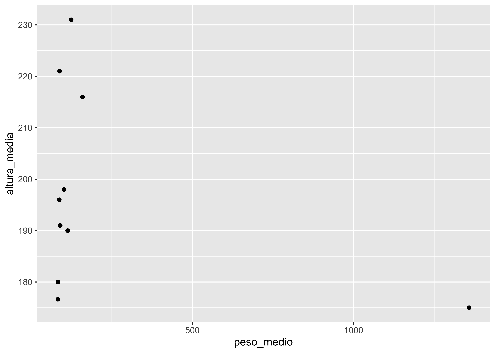

library(tidyverse)
library(dados)Aula prática de relatórios
R para Ciência de Dados I
R Markdown
Segundo Leão and Santiago (2022),
é dito que (Leão and Santiago 2022) ….
- Cuidado com os caminhos!
imdb <- read_rds("../dados/imdb.rds")glimpse(imdb)Rows: 28,490
Columns: 20
$ id_filme <chr> "tt0023352", "tt0037946", "tt0216204", "tt0171889…
$ titulo <chr> "Prestige", "Nob Hill", "The Shade", "Viewer Disc…
$ ano <dbl> 1931, 1945, 1999, 1998, 1987, 1945, 1949, 1956, 2…
$ data_lancamento <chr> "1932-01-22", "1945-11-15", "2000-03-01", "2012-0…
$ generos <chr> "Adventure, Drama", "Drama, Musical", "Drama", "C…
$ duracao <dbl> 71, 95, 83, 105, 133, 91, 81, 98, 50, 85, 267, 11…
$ pais <chr> "USA", "USA", "USA", "USA", "USA", "USA", "USA", …
$ idioma <chr> "English", "English", "English", "English", "Engl…
$ orcamento <dbl> NA, NA, 400000, NA, 20000000, NA, NA, 1505000, 50…
$ receita <dbl> NA, NA, NA, NA, 67331309, NA, NA, NA, NA, NA, NA,…
$ receita_eua <dbl> NA, NA, NA, NA, 51249404, NA, NA, NA, NA, NA, NA,…
$ nota_imdb <dbl> 5.7, 6.3, 7.1, 3.4, 7.2, 7.1, 6.3, 7.0, 5.7, 3.1,…
$ num_avaliacoes <dbl> 240, 246, 102, 111, 26257, 1639, 310, 162, 115, 1…
$ direcao <chr> "Tay Garnett", "Henry Hathaway", "Raphaël Nadjari…
$ roteiro <chr> "Harry Hervey, Tay Garnett", "Wanda Tuchock, Norm…
$ producao <chr> "RKO Pathé Pictures", "Twentieth Century Fox", "F…
$ elenco <chr> "Ann Harding, Adolphe Menjou, Melvyn Douglas, Ian…
$ descricao <chr> "A woman travels to a French penal colony in Indo…
$ num_criticas_publico <dbl> 12, 11, 1, 5, 142, 35, 8, 9, 4, 12, 4, 502, 6, 35…
$ num_criticas_critica <dbl> 2, 2, 1, 3, 62, 10, 5, NA, 5, 7, 7, 161, 1, 18, 8…filmes_nota_boa <- imdb %>%
filter(nota_imdb > 8, num_avaliacoes > 10000)
top_filmes <- filmes_nota_boa %>%
arrange(desc(nota_imdb)) %>%
slice(1:10) %>%
pull(titulo) %>%
knitr::combine_words(and = " e ")Inline code!
A base IMDB possui 28490 filmes, sendo 130 filmes com nota maior do que 8 tendo mais do que 10 mil avaliações. Os filmes com melhor nota são The Shawshank Redemption, The Godfather, The Godfather: Part II, 12 Angry Men, Pulp Fiction, Schindler’s List, Wheels, Forrest Gump, Star Wars: Episode V - The Empire Strikes Back, e Goodfellas.
Tabelas
| Col1 | Col2 | Col3 |
|---|---|---|
| 28490 | ||
filmes_nota_boa %>%
mutate(lucro = receita - orcamento) %>%
slice_max(order_by = lucro, n = 10) %>%
select(titulo, ano, nota_imdb, lucro) %>%
knitr::kable()| titulo | ano | nota_imdb | lucro |
|---|---|---|---|
| Avengers: Endgame | 2019 | 8.4 | 2441800564 |
| Avengers: Infinity War | 2018 | 8.4 | 1727359754 |
| Jurassic Park | 1993 | 8.1 | 970758854 |
| The Lion King | 1994 | 8.5 | 923511805 |
| Toy Story 3 | 2010 | 8.3 | 866969703 |
| Star Wars | 1977 | 8.6 | 764768912 |
| Inside Out | 2015 | 8.1 | 683071350 |
| The Sixth Sense | 1999 | 8.1 | 632806292 |
| Coco | 2017 | 8.4 | 632083670 |
| Forrest Gump | 1994 | 8.8 | 623229452 |
base_tabela <- filmes_nota_boa %>%
mutate(lucro = receita - orcamento) %>%
slice_max(order_by = lucro, n = 10) %>%
mutate(lucro_formatado = lucro / 1000000,
# imaginando se fosse em reais
lucro_formatado = scales::dollar(round(lucro_formatado), prefix = "R$ ", big.mark = ".", decimal.mark = ",")
) %>%
select(Nome = titulo, Ano = ano, `Nota IMDB` = nota_imdb, `Lucro (em milhões de reais)` = lucro_formatado)
knitr::kable(base_tabela)| Nome | Ano | Nota IMDB | Lucro (em milhões de reais) |
|---|---|---|---|
| Avengers: Endgame | 2019 | 8.4 | R$ 2.442 |
| Avengers: Infinity War | 2018 | 8.4 | R$ 1.727 |
| Jurassic Park | 1993 | 8.1 | R$ 971 |
| The Lion King | 1994 | 8.5 | R$ 924 |
| Toy Story 3 | 2010 | 8.3 | R$ 867 |
| Star Wars | 1977 | 8.6 | R$ 765 |
| Inside Out | 2015 | 8.1 | R$ 683 |
| The Sixth Sense | 1999 | 8.1 | R$ 633 |
| Coco | 2017 | 8.4 | R$ 632 |
| Forrest Gump | 1994 | 8.8 | R$ 623 |
base_tabela %>%
DT::datatable()peso_altura <- dados_starwars |>
drop_na(especie) |>
group_by(especie) |>
summarise(peso_medio = mean(massa, na.rm = TRUE),
altura_media = mean(altura, na.rm = TRUE)) |>
slice_max(order_by = peso_medio, n = 10) |>
ungroup()
peso_altura |>
ggplot() +
geom_point(aes(x = peso_medio, y = altura_media))

Referências
Leão, Suiane Rodrigues, and Alvany Maria dos Santos Santiago. 2022. “Cenário Das Barragens de Rejeito: Conhecer Para Evitar Novas Catástrofes.” Ambiente & Sociedade 25. https://doi.org/10.1590/1809-4422asoc20210066r1vu2022l2ao.